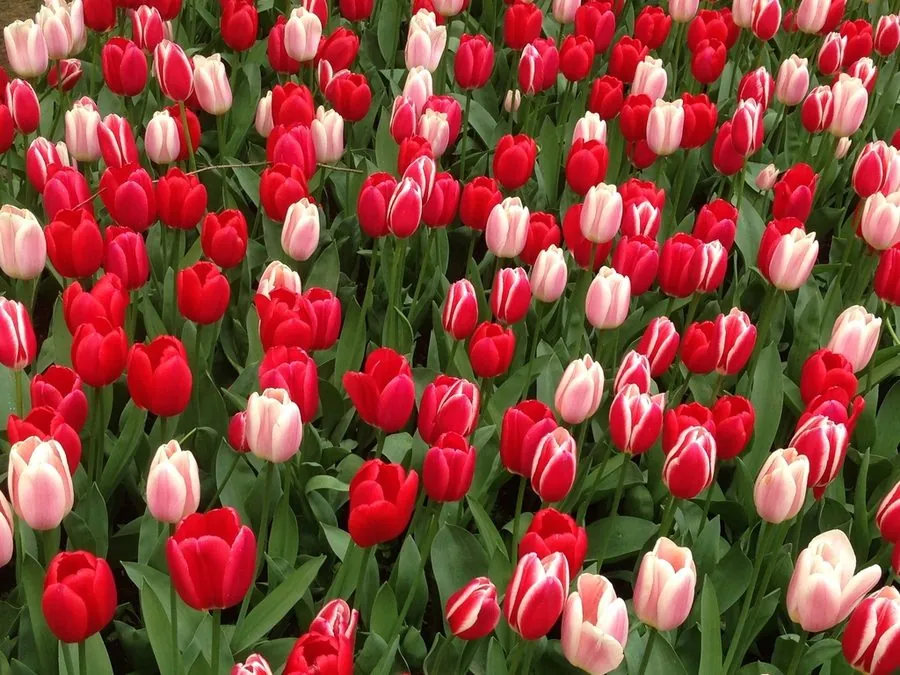

花卉与草本 · 植物界
郁金香 Tulipa gesneriana

原产中亚天山的百合科球根花卉，杯状花冠端庄艳丽，春季成片绽放，是荷兰国花和世界著名切花之一。
- 分类
- 门被子植物门纲木兰纲目百合目科百合科属郁金香属
- 栖息环境
- 草原、山坡及林缘，喜冷凉干燥、阳光充足的环境
- 地理分布
- 原产中亚天山与帕米尔高原，荷兰、土耳其及中国新疆等地广泛栽培
- 保护级别
- 暂无评估
物种志
郁金香为百合科郁金香属多年生球根草本，株高 30–60 厘米，地下具卵形鳞茎。每株通常有叶 3–5 枚，宽披针形、灰绿色，表面被白粉。花单生茎顶，花被片 6 枚，呈杯状、碗状或百合状，有红、黄、粉、白、紫及复色，花期 3–5 月，果期 5–6 月，蒴果三棱状。
郁金香原产中亚天山、帕米尔高原一带，喜冬季冷凉湿润、夏季干燥的环境，需经过低温春化才能正常开花，适宜在疏松、排水良好的沙质土壤中栽培。17 世纪荷兰掀起“郁金香狂热”，一枚稀有球茎的价格一度被炒到相当于一栋豪宅，如今荷兰仍是世界最大的郁金香生产国。鳞茎含秋水仙碱，误食会引起中毒，栽培以观赏和切花为主，公园花展中常成片布置成色带。
形态与习性
- 株高30–60 厘米
- 花期3–5 月，单朵花开放约 10–15 天
- 果期5–6 月，蒴果三棱状
- 光照喜光，生长期需充足阳光
- 水分土壤湿润但不积水，休眠期保持干燥
- 土壤疏松、排水良好的沙质壤土，忌黏重
- 繁殖以分球为主，也可播种
趣味知识
- 荷兰“郁金香狂热”发生于 1634–1637 年，是历史上最早有记载的金融泡沫之一。
- 郁金香杯状的“花瓣”其实是 6 枚花被片，没有花瓣与花萼之分。
- 花苞在温暖室内会迅速张开，低温时重新闭合，可据此调节切花状态。
- 郁金香鳞茎外观像洋葱，却含秋水仙碱，不可食用。